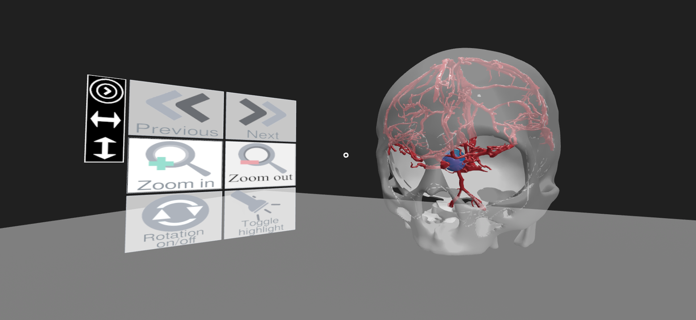
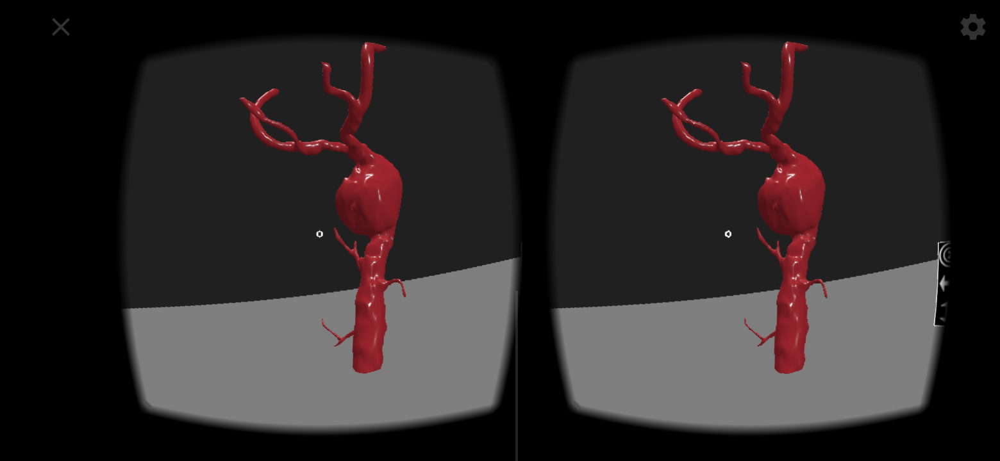

Vascular Diseases
The vascular diseases are a class of diseases of the blood vessels – the arteries and veins of the circulatory system. There are several types of those diseases and they can affect almost any part of the body. Stroke, aneurysm, and deep vein thrombosis are some of the most common vascular diseases and their signs and symptoms vary from each type to another. The vascular diseases commonly occurs at sites of turbulent blood flow, such as the arteries when the blood flow changes direction abruptamente.
More modes
Virtual Reality

In order to fully experiece the VR mode, it is required one HMD (head-mounted display).

It may be necessary to accept the installation of Google Virtual Reality services
on the first access.
Images Virtual Reality


❮
❯
×